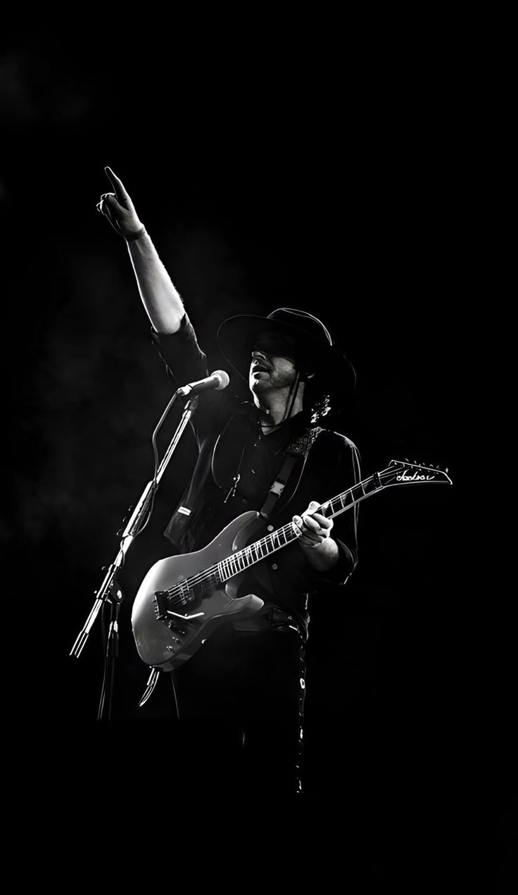

EDICIÓN N.º 1 · NOVIEMBRE 2026
¿Y EL AFTER DEL AFTER DÓNDE VA A SER?
«La música nunca deja de transformarse»
Gustavo Cerati (1959-2014) fue cantante, guitarrista y compositor argentino. Fue el líder de Soda Stereo y después tuvo una carrera solista donde mezcló rock, pop, electrónica y hasta música sinfónica. En este fanzine recorremos su historia y sus discos.
Explorar la discografía